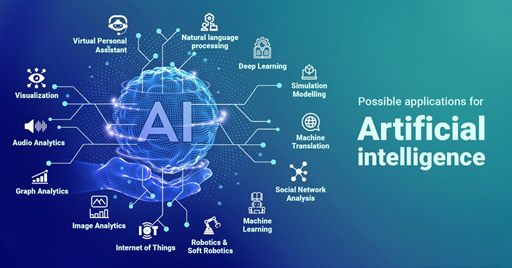

01 / INTELLIGENCE
AI & Data
Finding patterns, asking sharper questions, and exploring what intelligent tools can do.
AI & Applied Computing @ HSUHK
An undergraduate specializing in Artificial Intelligence and Its Applications, with a passion for responsive front-end experiences, intelligent applications, and thoughtful data systems.

A little about me
Artificial intelligence, considered front-end experiences, and better-managed data—grounded in a process-oriented mindset.
I am LI HO YIN (Kingsley), an undergraduate student specializing in Artificial Intelligence and Its Applications at HSUHK. Through core training in courses like COM1006, I have developed a dual passion for building seamless responsive front-end user interfaces and optimizing database management systems. Guided by a process-oriented mindset, I am dedicated to deploying data-driven solutions and leveraging open-source workflows to eliminate daily inefficiencies.
Let’s make something usefulMy toolkit
A growing mix of technical skills, analytical thinking, and the tools that help ideas take shape.
01 / INTELLIGENCE
Finding patterns, asking sharper questions, and exploring what intelligent tools can do.
02 / DEVELOPMENT
Turning early concepts into clean, responsive experiences people can use.
03 / INSIGHT
Connecting data and development tools to practical decisions and repeatable workflows.
Selected explorations
Concepts, experiments, and small steps toward useful things. Each project starts with a question.
Showing all 3 projects
01 — WEB EXPERIENCE
Built with a GitHub Copilot vibe-coding workflow, this glassmorphism portfolio pairs a mobile-responsive layout with a focus on optimized loading speed.
02 — ANALYTICS CONCEPT
An interactive dashboard concept transforming raw business data into actionable visual insights to support timely, informed decision-making.
03 — STUDENT TOOL CONCEPT
A lightweight Vanilla JavaScript productivity app concept using LocalStorage to organize study schedules and make coursework easier to manage.
The learning curve
A focused degree in artificial intelligence—pairing core computing foundations with hands-on analytical methods and responsible application.
PRESENT · HONG KONG
Bachelor of Science in Artificial Intelligence and Its Applications
Studying the theory and practice of AI, grounded in data structures, disruptive technology, and database management systems.
Practical machine learning coursework with Linear Regression and Decision Tree models, feature engineering workflows, and process-oriented software development.
ALONG THE WAY
Independent projects & continuous learning
Applying course concepts through responsive web experiments, practical data work, and open-source tools that make useful ideas easier to build.
✳ Coursework, milestones, and new projects — more to come.
Have a good question?
I’m open to conversations, project ideas, and collaborations where technology meets real-world impact. Say hello — I’d love to hear what you’re working on.
Send a collaboration inquiry Download Resume (PDF)